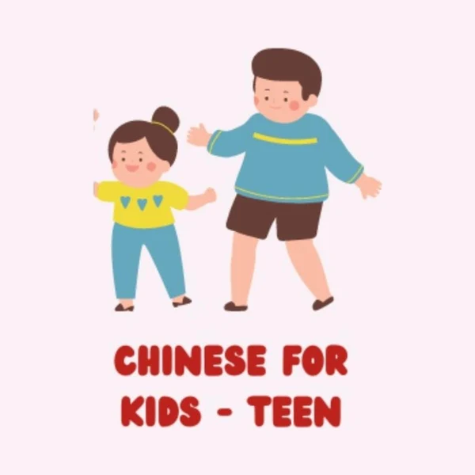
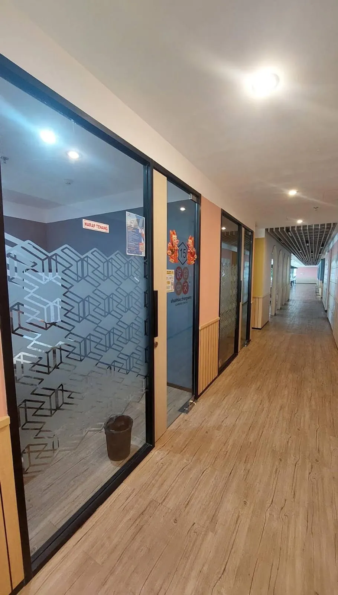

Belajar Mandarin Lebih Percaya Diri Bersama Shuohao Zhongwen
Temukan pengalaman belajar bahasa Mandarin yang nyaman dengan pembelajaran yang dapat disesuaikan dengan kebutuhan dan kemampuanmu.
- Kursus Mandarin di Surabaya
- Pembelajaran offline
- Pilihan kelas sesuai kebutuhan
- Laoshi ramah dan sabar menurut ulasan siswa


Pilih kelas yang sesuai kebutuhanmu
Dari kelas anak dan remaja, persiapan HSK, percakapan sehari-hari, sampai Mandarin untuk bisnis. Detail level, jadwal, dan biaya dikonfirmasi admin.
Semua Program
Chinese for Kids & Teens
Kelas Mandarin untuk anak dan remaja dengan materi listening, speaking, reading, dan writing.
Usia 7–18 tahun
HSK / HSKK Preparation
Persiapan belajar untuk HSK dan HSKK, dari pemula hingga level 5.
HSK level 1–5
Daily Conversation
Latihan percakapan Mandarin sehari-hari, tersedia dari level beginner hingga advance.
Beginner – AdvanceBusiness Chinese
Mandarin untuk kebutuhan komunikasi di dunia kerja dan bisnis.
Pelajar & dewasa
School Tutorial
Bimbingan review dan preview pelajaran Mandarin di sekolah.
Pelajar sekolah
Basic Business Mandarin
Kelas semi private dengan kurikulum standar Business Chinese untuk dewasa.
Kelas baru · Semi private
Belajar yang terasa nyaman dan terarah
Berdasarkan ulasan siswa di Google Maps dan informasi dari profil kursus.

Suasana belajar yang nyaman
Ruang kelas di Voza Tower yang tertata rapi, dari ruang kecil hingga area belajar bersama.
Pembelajaran menyesuaikan kebutuhan siswa
Salah satu ulasan menyebut kurikulum disesuaikan dengan apa yang dibutuhkan siswa.
Pengajar ramah dan sabar
Laoshi dikenal ramah, sabar, dan berpengalaman menurut ulasan.
Didorong untuk berbicara
Ulasan siswa menyebut laoshi mendorong murid berani berbicara dalam bahasa Mandarin.
Untuk berbagai kebutuhan
Ada kelas untuk anak dan remaja, persiapan HSK, percakapan, bisnis, dan pendampingan sekolah.
Sekilas tempat belajar kami



Tempat lesnya nyaman, laoshinya berpengalaman, sabar dan bisa mendorong murid untuk ngomong dalam bahasa mandarin.
Ulasan Google Maps
“Les mandarin offline yg oke di sby, tempat nyaman dan laoshi yg ramah.”
Ulasan Google Maps
“A great place to learn Chinese. The laoshis are so friendly. They adjust the curriculum based on what i needed.”
Ulasan Google Maps
Mulai Perjalanan Belajar Mandarinmu Bersama Kami
Ceritakan kebutuhan belajarmu, admin akan membantu memilih program yang sesuai.